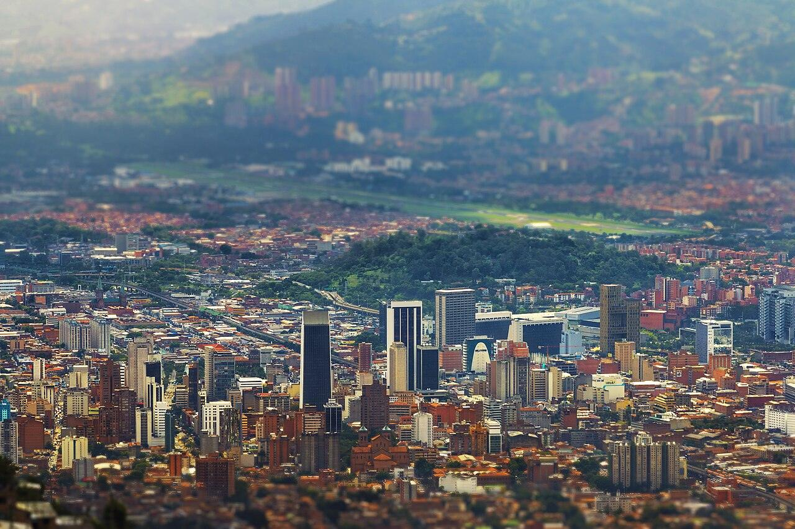

COLOMBIA · 13 — 20 OCTUBRE
Ocho días.
Mil recuerdos.
Arte, montañas y buenas mesas.
Un viaje de aniversario a su ritmo.

SU CUADERNO DE VIAJE
El plan, día por día.
Martes 13 · Bienvenidos a Medellín
Llegada, descanso en el Hampton y cena cerca del hotel en La Provincia.
LAS NOCHES TAMBIÉN SE SABOREAN
Una mesa para dos.
Selección de sus guías, ordenada por puntuación. Las cenas diarias equilibran valoración, ubicación y horario.